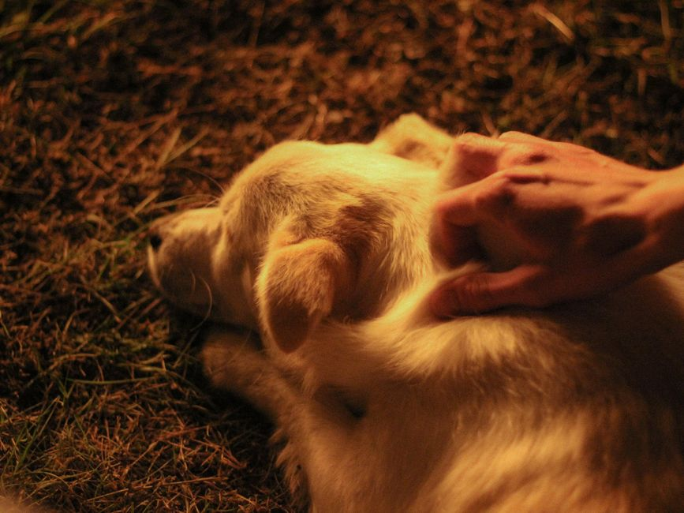

Comment reconnaître et gérer les crises d'anxiété chez votre animal nouveau venant
Photo: beauQ / Pixabay
Bienvenue dans votre rôle de nouveau propriétaire d'un animal de compagnie. C'est un moment d'émotion forte et de joie, mais aussi l'occasion de vous assurer que votre nouveau compagnon est bien pris en charge. Dans cet article, nous aborderons comment reconnaître et gérer les crises d'anxiété chez votre animal nouveau venant, une situation qui peut survenir plus fréquemment que vous ne le pensez.
Reconnaître les symptômes d'anxiété chez votre animal
Photo: woodypino / Pixabay
Les signes d'anxiété chez un animal peuvent être variés et dépendre de la race, de l'âge et du tempérament de votre compagnon. Voici quelques-uns des signes à surveiller :
-
Perturbations comportementales : L'animal se cache, se ronge les griffes, les griffes ou se déchire la peau. Ces comportements peuvent survenir lors d'une séparation de courte durée (2-3 minutes) du propriétaire.
-
Changements d'appétit : Si votre animal ne mange que 30% de son rite alimentaire habituel, cela peut indiquer un stress.
-
Problèmes urinaires ou fécaux : Des accidents d'ordre ou des selles indésirables peuvent être un signe que l'animal est anxiété.
Étape 1 : Détecter les causes de l'anxiété
La première étape pour gérer les crises d'anxiété chez votre animal est de déterminer les causes. Ces causes peuvent varier, mais voici les plus courantes :
-
Nouvelle maison : Les animaux peuvent s'anxieux lorsqu'ils doivent s'adapter à un nouvel environnement. Il faut donc surveiller leur comportement pendant les 7 à 10 premiers jours.
-
Nouveau propriétaire : Un changement de maison ou de propriétaire peut être stressant. Observer le comportement de votre animal pendant les 2 semaines suivant le changement.
-
Événements extérieurs : Les bruits forts, les visites imprévues ou les modifications de routine peuvent provoquer des crises d'anxiété.
Étape 2 : Créer un environnement apaisant
Une fois que vous avez identifié les facteurs contribuant à l'anxiété de votre animal, vous pouvez prendre des mesures pour créer un environnement apaisant. Voici quelques astuces :
-
Aménagement de l'espace : Offrez à votre animal un espace sûr et calme. Il est recommandé de lui fournir un endroit où il peut se sentir en sécurité, comme un coin avec une couverture ou un matelas.
-
Routine quotidienne : Une routine quotidienne stable peut aider à réduire l'anxiété. Essayez de maintenir les mêmes horaires pour les repas, les promenades et les activités.
-
Exercice régulier : L'exercice est essentiel pour la santé physique et mentale de votre animal. Il est recommandé de faire 30 minutes d'exercice par jour pour un chien, et 15 minutes pour un chat.
Étape 3 : Utiliser des techniques d'apaisement

Photo: Маргарита / Pexels
Il existe plusieurs techniques que vous pouvez utiliser pour calmer votre animal. Voici quelques-unes des plus efficaces :
-
Exposition progressive : Introduisez doucement votre animal à de nouvelles situations. Par exemple, si vous déménagez, présentez-lui le nouvel environnement en petites portions, sans l'obliger à entrer dans les pièces inquiétantes au début.
-
Tapis de calme : Ces tapis ont des effets calmants grâce à la stimulation magnétique. Placedz-en un dans la zone où votre animal se sent le plus à l'aise.
-
Musique apaisante : Des études ont montré que la musique peut réduire l'anxiété chez les animaux. Utilisez des playlists spécialement conçues pour les animaux.
Exemple concret : La situation du chien de la famille
Imaginez que vous venez de ramener à la maison un chien de la famille. Il est timide et réticent à explorer son nouvel environnement. Pour gérer ses crises d'anxiété :
- Règles d'adaptation : Sur les 7 premiers jours, établissez une routine de calme. Offrez-lui des zones de calme, comme une pièce à l'écart, et laissez-le s'adapter à son propre rythme.
- Éviter les sollicitations : Pendant les 10 premiers jours, évitez les invités et les visites imprévues. Cela permet de minimiser les stress externes.
- Pratiquer des techniques d'apaisement : Utilisez des tapis de calme et des playlists de musique apaisante. Cela peut aider votre chien à se sentir plus serein et en sécurité dans son nouvel environnement.
Étape 4 : Consulter un vétérinaire
Si les crises d'anxiété persistent malgré ces mesures, il est recommandé de consulter un vétérinaire. Il peut vous prescrire des médicaments ou des compléments alimentaires pour aider à réduire l'anxiété de votre animal. Il est important de souligner que l'approche médicamenteuse doit être combinée à une gestion comportementale et d'environnement.
Conclusion
Les crises d'anxiété chez un animal peuvent être gérées de manière proactive et constructive. En reconnaissant les signes d'anxiété, en déterminant les causes, en créant un environnement apaisant et en utilisant des techniques d'apaisement, vous pouvez aider votre animal à se sentir plus à l'aise et moins stressé. N'oubliez pas que chaque animal est unique, et ce qui fonctionne pour l'un peut ne pas fonctionner pour l'autre. Soyez patient et persistant, et n'hésitez pas à chercher l'aide d'un professionnel si nécessaire.
Produits recommandés
En tant que Partenaire Amazon, je réalise un bénéfice sur les achats remplissant les conditions requises.